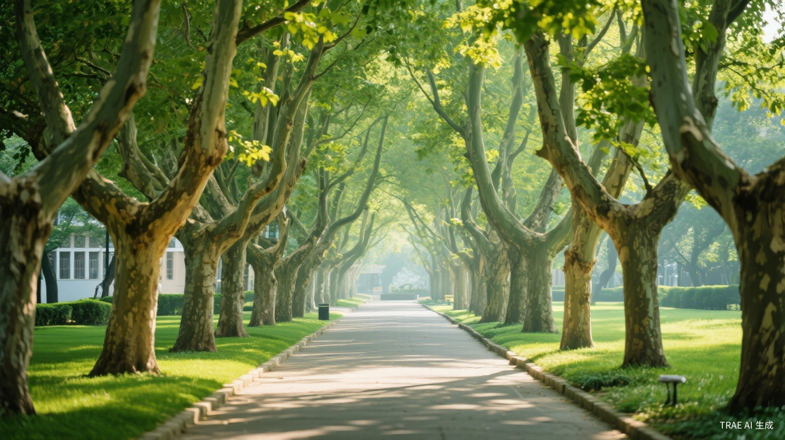
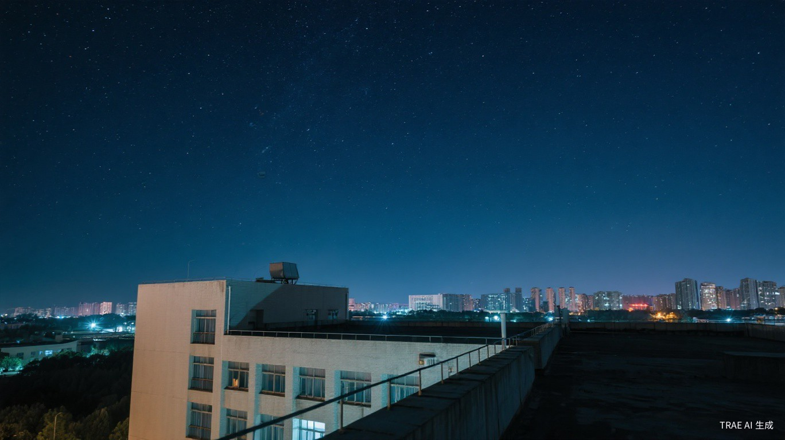

📷 打卡点 01
📷 打卡点 01
图书馆自习角
安静明亮的自习空间，落地窗旁阳光洒落，适合沉浸式学习。
安静明亮的自习空间，落地窗旁阳光洒落，适合沉浸式学习。推荐工作日下午 2-5 点前往，光线最佳。带上咖啡和笔记本，享受专注时光。
发现校园里的每一处美好角落
校园里藏着许多值得记录的角落 —— 安静的学习空间、浪漫的日落操场、 隐藏的美食窗口，还有观星天台和湖畔晨读亭。这份指南精选了 6 个校园打卡点， 带你发现日常中的诗意与美好。点击卡片，查看详细攻略。
📷 打卡点 01
安静明亮的自习空间，落地窗旁阳光洒落，适合沉浸式学习。
安静明亮的自习空间，落地窗旁阳光洒落，适合沉浸式学习。推荐工作日下午 2-5 点前往，光线最佳。带上咖啡和笔记本，享受专注时光。
傍晚时分的操场是校园最美的地方之一，金色夕阳铺满跑道。
傍晚时分的操场是校园最美的地方之一，金色夕阳铺满跑道，适合散步、跑步或静静坐着发呆。最佳时间为日落前 30 分钟，天空呈现橙红色渐变。
二楼三号窗口的招牌盖浇饭是校园美食顶流，排队虽长但值得。
二楼三号窗口的招牌盖浇饭是校园美食顶流，排队虽长但值得。中午 11:30 前或 13:00 后前往可避开高峰，搭配免费例汤更完美。

📷 打卡点 04连接教学楼与宿舍区的林荫大道，两侧梧桐树四季皆景。
连接教学楼与宿舍区的林荫大道，两侧梧桐树四季皆景。春天新绿、夏日浓荫、秋季金黄、冬日晴空，每个季节都值得记录。适合课间漫步。

📷 打卡点 05实验楼顶层天台是校园隐藏的观星宝地，远离宿舍区灯光干扰。
实验楼顶层天台是校园隐藏的观星宝地，远离宿舍区灯光干扰，视野开阔。晴朗夜晚约上好友，带一张野餐垫，仰望星空聊天，解压又浪漫。
校园人工湖边的六角凉亭，清晨最宜人，湖面薄雾缭绕，鸟鸣声声。
校园人工湖边的六角凉亭，清晨 6:30-8:00 最宜人。湖面薄雾缭绕，鸟鸣声声，捧一本书或背诵单词，开启元气满满的一天。